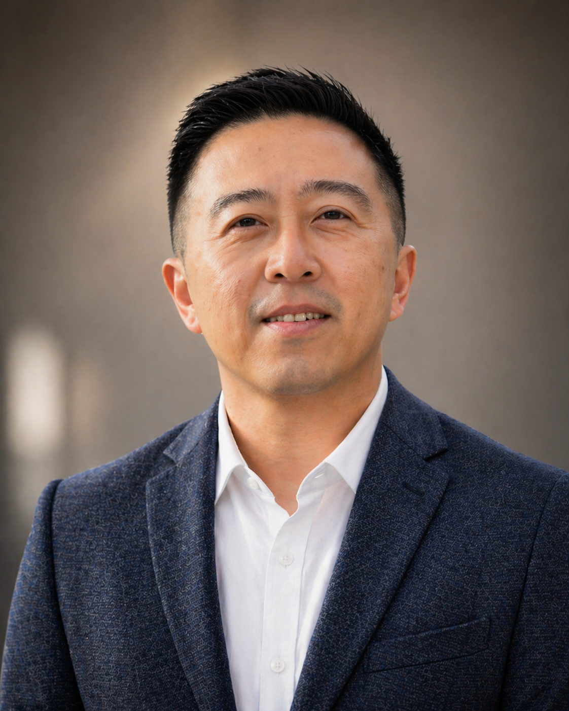
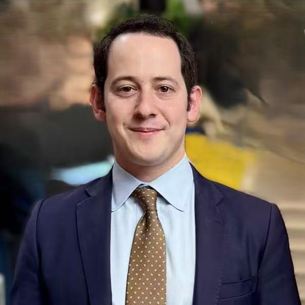

Light
光
A solo Chinese play with English accessibility elements, created by Zheng Xue (Snow), exploring family, memory, grief, hope, and the parent-child bond through theatrical storytelling and shadow puppetry.
Austin, Texas · Nonprofit Arts
Light Way Arts Foundation advances the arts, education, and cultural exchange through cross-cultural storytelling, bilingual arts education, family-centered performance, and community arts programs that connect Chinese and American cultural traditions.
Theater · Shadow puppetry · Bilingual storytelling · Family-centered arts
Our Mission
We are an Austin-based nonprofit arts foundation devoted to work that is warm, sincere, and rooted in lived cultural experience — inviting families, schools, and communities into stories told with care.
We welcome families, children, schools, libraries, bookstores, arts organizations, donors, sponsors, grant reviewers, and community collaborators — including Chinese American communities and the broader Austin public.

Recent Highlight
On June 3, 2026, Light Way Arts Foundation hosted First Light, a community arts night at The VORTEX / Butterfly Bar in Austin. The evening brought together local artists and community members for storytelling, music, comedy, movement, and shared moments of connection.
This gathering marked one of the Foundation’s first public programs, reflecting our mission to advance the arts, education, and cultural exchange through intimate, welcoming, cross-cultural community experiences.
Projects
Our projects span stage, page, and community — each exploring how art can hold memory, courage, and connection across languages and traditions.
Light
光
A solo Chinese play with English accessibility elements, created by Zheng Xue (Snow), exploring family, memory, grief, hope, and the parent-child bond through theatrical storytelling and shadow puppetry.
Impossible Light
永远的光
A bilingual children’s picture book connected to the world and emotional themes of Light. It brings themes of love, memory, and family connection to children and families through story and image.
Kung Fu Cowgirl
A cross-cultural performance world blending Texas spirit, Chinese cultural elements, music, movement, humor, courage, and East-meets-West storytelling.
Community Arts Programs
Bilingual storytelling, school visits, shadow puppetry workshops, bookstore and library events, and family-centered community arts activities — bringing performances, books, and cultural programming to more people.
Programs
Whether you discover us through a stage performance, a book, a school visit, or a neighborhood event, we aim to offer a credible, welcoming home for our work in Austin and beyond.
Leadership
Light Way Arts Foundation is led by its founding board of directors, who provide governance and oversight for the Foundation’s nonprofit arts, education, and cultural exchange work.
Director / Founder / Artistic Director
Xue Hwang, also known as Snow Zheng, is a Chinese-born, Austin-based writer, director, performer, producer, and multidisciplinary artist. She is the founder of Kung Fu Cowgirl and a founding board director of Light Way Arts Foundation, creating original work that bridges cultures through theater, movement, music, shadow puppetry, and storytelling.
Her works include the solo play Light (光), the children’s book Impossible Light, and the musical Kung Fu Cowgirl. Her productions have been performed in China and the United States, including Beijing, Harbin, New York, and Austin. Xue is passionate about creating visually poetic, emotionally honest, and accessible performance that brings families and communities together across languages and backgrounds.

Director / Producer
Contact: gene@lightwayarts.org
Gene Hwang is a producer, creative director, educator, and cultural entrepreneur. He is the producer and creative director of Kung Fu Cowgirl: The Musical, co-producer of the solo stage play Light (光), and co-creator of the illustrated children’s book Impossible Light with his wife and creative partner, Xue Hwang / Snow Zheng.
A UC Berkeley graduate in Molecular & Cell Biology, Gene was also a Student Teacher Poet with June Jordan’s Poetry for the People program. His background spans music, education, storytelling, and international admissions consulting. At Light Way Arts Foundation, Gene helps shape strategy, partnerships, production, and outreach, with a focus on building meaningful cultural experiences that inspire young people and connect communities.

Director
Jonathan Ginsberg brings a global background in education, media, law, and cultural exchange to Light Way Arts Foundation. A graduate of Johns Hopkins University in International Studies, Jonathan lived in China, where he worked with an international corporate law firm and China Radio International, hosting BizChina and serving as a news editor for Today.
He is now Co-Founder and President of Beyond Education Consulting and Executive Director of the Global Friendship City Association. Jonathan is passionate about mentoring young people, building bridges across cultures, and supporting community-based work that deepens understanding through education, friendship, and the arts.
For organization, partnership, sponsorship, or verification inquiries, please contact Gene Hwang at gene@lightwayarts.org.
Events

Presented by Light Way Arts Foundation
Join Light Way Arts Foundation for an intimate evening of local performance, storytelling, music, comedy, and community in the beautiful outdoor space of The VORTEX / Butterfly Bar.
Featuring local artists in music, comedy, storytelling, dance, theater, and surprise moments.
Theme: Stories, songs, laughter, and light.
RSVP / Support: Scan the QR code on the event image or contact hello@lightwayarts.org.
Support
Supporters help us bring performances, books, workshops, and cultural programming to more families, schools, and community partners. We welcome donations, sponsorships, in-kind support, and community partnerships.
To discuss supporting Light Way Arts Foundation, contact Gene Hwang at gene@lightwayarts.org or reach us at hello@lightwayarts.org.
Online giving details will be added soon.
Get in TouchContact
We welcome questions about performances, school and library visits, community partnerships, sponsorships, donations, and ways to support our work.
Light Way Arts Foundation
Austin, Texas
501(c)(3) nonprofit organization